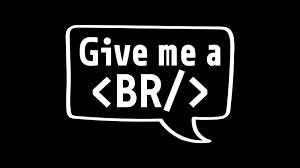

Hi, my name is Ashish
and I am a passionate

Work Experience
Role: Network Engineer(L2) in Wipro Limited Client - Bharti Airtel Limited under IWAN Project.
Responsibilities:
·End-to-end L1 and L2 troubleshooting from provider edge to customer edge router.
·Close co-ordination with FE, OEM & Customer Network Team.
·Timely updates to customer ensuring minimum downtime.
Role: Customer Service Executive in Startek Client - Bharti Airtel
Responsibilities:
Proces s : Airtel Bl a c k
Provide Resolution to Bharti Airtel B2C clients.
Talk to customer s over call .